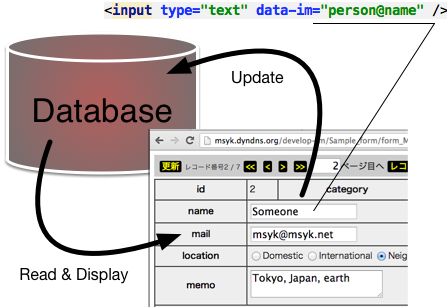

INFO
| "INTER-Mediator e-Learning Course" is offered for you. They are covering from the basic to the advanced topics with lectures and exercises. The language is Japanese and 20,000JPY. You could purchase it from here. |
INTER-Mediator a a Glance
|
INTER-Mediator is a web development framework. Develop Simply, Realize Ideals. |
The fundamental communication between database and web page establishes just declarative way without programming.
- By adding the information about table and field to the text field in a web page, the data from database can be shown on it.
- Moreover if the data on the text field is updated by a user, it automatically updates to database.
- It realizes for the most of HTML form elements, and showing and setting to attributes can be to another kind of elements.
- If the data includes multiple records, it repeats on the web page. The pagination navigation is available just a declaring.
- The insert and delete buttons can be shown automatically.
- Images and other kinds of objects can corroborate with database.
- Authentication and authorization are available with a declarative way without programming.
Complex requirements and user interactions can be handled with programming.

- INTER-Mediator has the programming interface, and they realize to manipulate database on both server and client sides.
- On the server, you can modify the processing for each record or each field with programming, so it doesn't a simple 2-tier system and you can involve domain logic.
- Any JavaScript components can integrate. For example, HTML editor tinyMCE can be use with binding to database, and original file upload component is available.
- The browser detection is available and specify the supporting range. The message will be shown when the user uses unsupported browsers.
Demo of INTER-Mediator
Demo Video on another window. Click here.
Supported Server and Browsers
PHP is required for the server-side program. On some previous versions, INTER-Mediator used PHP 5.3 functions. On the version 2.8, all 5.3-above functions were removed, so INTER-Mediator works on PHP 5.2. The client-side program is working with JavaScript. HTML5 savvy browsers can work fine.
- Web Server: Apache2 with PHP 5.2-5.5, IIS with PHP 5.2-5.5
- Database: FileMaker Server 10 or later, MySQL(PDO Support version), PostgreSQL(PDO Support Version), SQLite3(PDO Support Version)
- Support Browser: Chrome, Safari, Firefox, Opera (Most of versions), Internet Explorer Ver.8 or later (Ver.7 is limited, and Ver.6 is NOT)